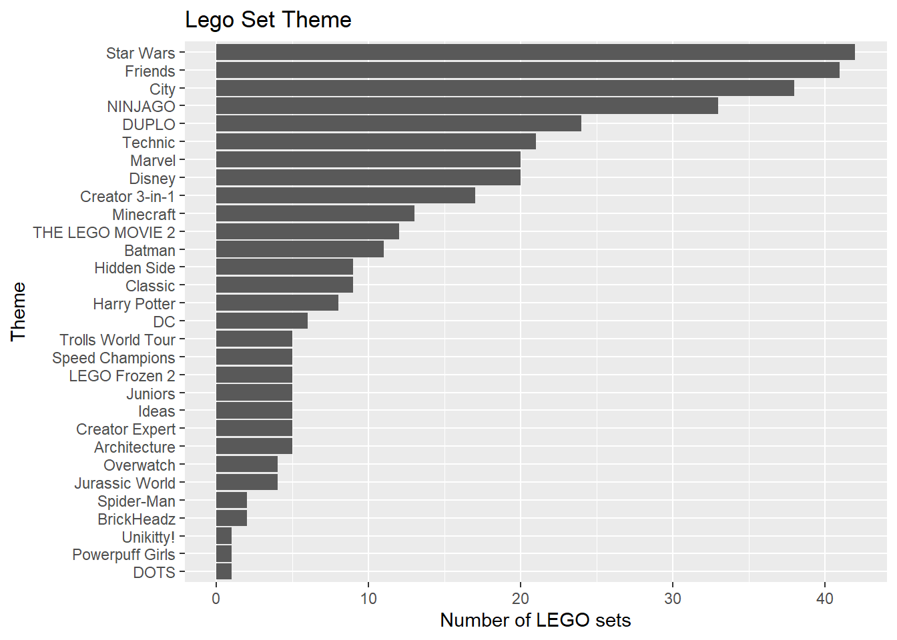

library(tidyverse)
library(broom)
library(ggformula)
library(knitr)
library(rms)
library(patchwork)
# add other packages as neededHW 07: Lego Prices
Important
Due: Friday, November 1st, 11:59pm
Introduction
In this homework you will use multiple linear regression to fit and evaluate models using characteristics of LEGO sets to understand variability in the price.
Learning goals
In this assignment, you will…
- Use exploratory data analysis to inform feature engineering steps
- Evaluate and compare models
- Assess model conditions
- Use inference to draw conclusions
Getting started
Packages
The following packages will be used in this assignment:
Important
All narrative should be written in complete sentences, and all visualizations should have informative titles and axis labels.
Data: LEGOs
The data for this analysis includes information about LEGO sets from themes produced January 1, 2018 and September 11, 2020. The data were originally scraped from Brickset.com, an online LEGO set guide and were obtained for this assignment from Peterson and Ziegler (2021).
You will work with data on about 400 randomly selected LEGO sets produced during this time period. The primary variables are interest in this analysis are
Pieces: Number of pieces in the set from brickset.com.Minifigures: Number of minifigures (LEGO people) in the set scraped from brickset.com. LEGO sets with no minifigures have been coded as NA. NA’s also represent missing data. This is due to how brickset.com reports their data.Amazon_Price: Amazon price of the set scraped from brickset.com (in U.S. dollars)Size: General size of the interlocking bricks (Large = LEGO Duplo sets - which include large brick pieces safe for children ages 1 to 5, Small = LEGO sets which- include the traditional smaller brick pieces created for age groups 5 and - older, e.g., City, Friends)Theme: Theme of the LEGO setYear: Year the LEGO set was producedPages: Number of pages in the instruction booklet
Exercises
Important
All narrative should be written in complete sentences, and all visualizations should have informative titles and axis labels.
Exercise 1
The data are contained in lego-sample.csv. Use the code below to read in the data, replace the NAs in Minifigure with 0, and remove any observations that have missing values for the relevant variables.
legos <- read_csv("data/lego-sample.csv") |>
select(Size, Pieces, Theme, Amazon_Price, Year, Pages, Minifigures) |>
mutate(Minifigures = replace_na(Minifigures, 0)) |>
drop_na()Let’s think about the analysis decisions we just made. We decided to drop all observations that have missing values for any of the relevant variables we identified. What are these advantages and disadvantages of doing this? We also replaced ALL of the NAs in Minifigures with 0’s. What are the advantages and disadvantages of doing this?
Exercise 2
Visualize the distributions of the predictor variables Pieces, Size, Year, and Pages. Neatly arrange the plots using the patchwork package. Create univariate visualizations no bivariate visualizations.
Exercise 3
The distribution of Theme is shown below. The bars are ordered by the frequency they occur in the data set.
legos |>
count(Theme) |>
mutate(Theme = fct_reorder(Theme, n)) |>
gf_col(Theme ~ n) |>
gf_labs(title = "Lego Set Theme",
y = "Theme",
x = "Number of LEGO sets")
What is one reason we should avoid putting the variable Theme in a model as is?
Exercise 4
Create a new variable called Theme_coarse that collapses any levels of Theme with fewer than 20 observations into a single category called “Other”. Hint: Look into the function fct_lump_n. You’ll want to use it inside a mutate statement.
Exercise 5
Fit a model that uses the variables Size, Theme, and Pages to predict Amazon_Price. Call this model1.
Exercise 6
Create a new variable called since2018 that calculates the number of years since 2018 based on the variable Year.
Exercise 7
Now let’s consider a new model that includes all the variables used in the model from Exercise 5 along with since2018, Pieces and Minifigures. Call this model2
Exercise 8
Compute the \(R^2\), \(R^2_{adj}\), AIC, and BIC for model1 and model2. Based on your results, what model do you believe is the “best” model? Justify your answer citing specific evidence from the values you just generated.
Exercise 9
For whichever model you chose above, determine whether the conditions for inference are met.
Exercise 10
For the same model, conduct an F-test and interpret your results in the context of the problem. Make sure to:
- Identify the null and alternative hypotheses.
- Compute the F-statistic.
- Compute the p-value.
- Interpret the result of your test at a significance level of \(\alpha = 0.05\)
Grading (50 points)
| Component | Points |
|---|---|
| Ex 1 | 4 |
| Ex 2 | 5 |
| Ex 2 | 3 |
| Ex 4 | 4 |
| Ex 5 | 3 |
| Ex 6 | 3 |
| Ex 7 | 3 |
| Ex 8 | 8 |
| Ex 9 | 10 |
| Ex 10 | 4 |
| Workflow & formatting | 3 |
References
Peterson, Anna D., and Laura Ziegler. 2021. “Building a Multiple Linear Regression Model With LEGO Brick Data.” Journal of Statistics and Data Science Education 29 (3): 297–303. https://doi.org/10.1080/26939169.2021.1946450.